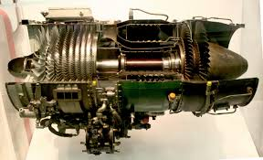
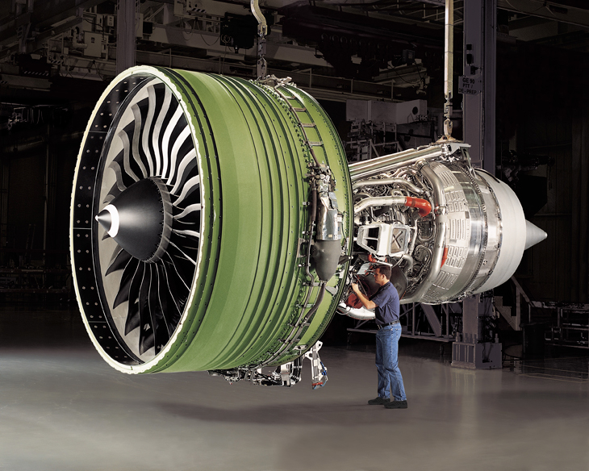

מנוע סילון - מבנה ועקרון פעולה
מבוא
מנוע סילון הוא מנוע בעירה פנימית המשתמש בדחף אוויר כדי לייצר כוח...

סוגי מנועי סילון
מנוע טורבו-סילון (Turbojet)
- מנוע בסיסי עם מדחס, תא בעירה וטורבינה.
מנוע טורבו-מניפה (Turbofan)
- כולל מניפה חיצונית להגדלת היעילות.
מנוע טורבו-ציר (Turboshaft)
- מנוע טורבו המיועד לכלי רכב חסר טוס.
מנוע מגח סילון (Ramjet)
- עובד במהירויות גבוהות מאוד ללא מדחס.
